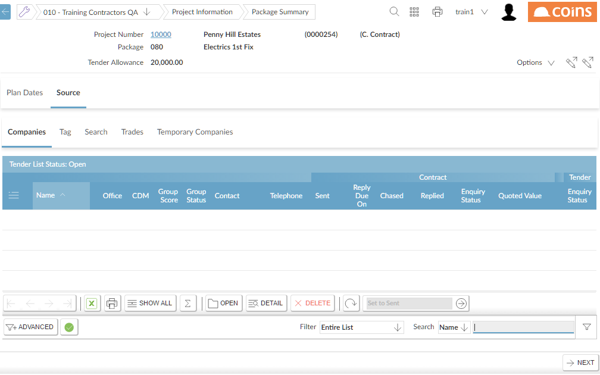

To create the list of companies:
-
- Go to the Source tab (depending on how

On the Source tab, the Companies tab displays the mailing list containing the offices you have selected. Initially, of course, this list is blank.
- Use one or more of these methods to build up the mailing list:
- Selecting Offices
- Searching the Database by geographical area.
- Searching for Providers of a Commodity or Trade that provide a specific commodity or service.
- Adding a Temporary Company.
- You can delete companies from the mailing list in the usual way, using the
 button.
button. - You can then send the